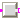
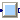
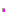
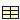
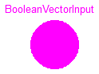
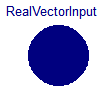
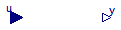
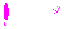
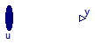

| Name | Description |
|---|---|
| BooleanVectorInput | Vector of Boolean inputs |
| IntegerVectorInput | Vector of Integer inputs |
| RealVectorInput | Vector of Real inputs |
|  PartialBooleanSISO | Partial block with a BooleanInput and a BooleanOutput signal |
| PartialIntegerSISO | Partial block with a IntegerInput and an IntegerOutput signal |
|  PartialRealSISO | Partial block with a RealInput and an RealOutput signal |
| PartialBooleanMISO | Partial block with a BooleanVectorInput and a BooleanOutput signal |
| PartialIntegerMISO | Partial block with an IntegerVectorInput and an IntegerOutput signal |
| PartialRealMISO | Partial block with a RealVectorInput and a RealOutput signal |
|  PartialTriggeredSet | Partial block to evaluate expression that is associated with the first input trigger signal (optionally with guard) |
|  ActiveSetIntegerRecord | Record to define a "active, integer" pair, to associate an integer with an active flag |

Connector with one input signal of type Boolean.
Extends from Boolean.
connector BooleanVectorInput =
input Boolean "Vector of Boolean inputs";
Connector with one input signal of type Boolean.
Extends from Integer.
connector IntegerVectorInput =
input Integer "Vector of Integer inputs";

Connector with one input signal of type Boolean.
Extends from Real.
connector RealVectorInput =
input Real "Vector of Real inputs";
| Type | Name | Description |
|---|---|---|
| output BooleanOutput | y | |
| input BooleanInput | u |
partial block PartialBooleanSISO "Partial block with a BooleanInput and a BooleanOutput signal"Modelica.Blocks.Interfaces.BooleanOutput y; Modelica.Blocks.Interfaces.BooleanInput u; end PartialBooleanSISO;
 Modelica_StateGraph2.Blocks.Interfaces.PartialIntegerSISO
Modelica_StateGraph2.Blocks.Interfaces.PartialIntegerSISO
| Type | Name | Description |
|---|---|---|
| output IntegerOutput | y | |
| input IntegerInput | u |
partial block PartialIntegerSISO "Partial block with a IntegerInput and an IntegerOutput signal"Modelica.Blocks.Interfaces.IntegerOutput y; Modelica.Blocks.Interfaces.IntegerInput u; end PartialIntegerSISO;

| Type | Name | Description |
|---|---|---|
| output RealOutput | y | |
| input RealInput | u |
partial block PartialRealSISO "Partial block with a RealInput and an RealOutput signal"Modelica.Blocks.Interfaces.RealOutput y; Modelica.Blocks.Interfaces.RealInput u; end PartialRealSISO;

| Type | Name | Description |
|---|---|---|
| input BooleanVectorInput | u[nu] | |
| output BooleanOutput | y |
partial block PartialBooleanMISO "Partial block with a BooleanVectorInput and a BooleanOutput signal" parameter Integer nu(min=0)=0 "Number of input connections";Modelica_StateGraph2.Blocks.Interfaces.BooleanVectorInput u[nu]; Modelica.Blocks.Interfaces.BooleanOutput y; initial equation pre(u) = fill(false,nu);end PartialBooleanMISO;
| Type | Name | Description |
|---|---|---|
| input IntegerVectorInput | u[nu] | |
| output IntegerOutput | y |
partial block PartialIntegerMISO "Partial block with an IntegerVectorInput and an IntegerOutput signal" parameter Integer nu(min=0)=0 "Number of input connections";Modelica_StateGraph2.Blocks.Interfaces.IntegerVectorInput u[nu]; Modelica.Blocks.Interfaces.IntegerOutput y; end PartialIntegerMISO;

| Type | Name | Default | Description |
|---|---|---|---|
| Advanced | |||
| Integer | precision | 3 | Number of significant digits to be shown in dynamic diagram layer for y |
| Type | Name | Description |
|---|---|---|
| input RealVectorInput | u[nu] | |
| output RealOutput | y |
partial block PartialRealMISO
"Partial block with a RealVectorInput and a RealOutput signal"
parameter Integer precision(min=0) = 3
"Number of significant digits to be shown in dynamic diagram layer for y";
parameter Integer nu(min=0)=0 "Number of input connections";
Modelica_StateGraph2.Blocks.Interfaces.RealVectorInput u[nu];
Modelica.Blocks.Interfaces.RealOutput y;
end PartialRealMISO;
| Type | Name | Default | Description |
|---|---|---|---|
| Select exactly one check box | |||
| Boolean | rising | true | =true, if rising input triggers evaluation |
| Boolean | changing | false | =true, if changing input triggers evaluation |
| Boolean | falling | false | =true, if falling input triggers evaluation |
| Boolean | active | false | =true, if active input at sample times triggers evaluation |
| Other options | |||
| Boolean | use_guard | false | = true, if guard enabled |
| Boolean | guard | true | y not changing, if guard=false (time varying) |
| Time | samplePeriod | 0 | Sample period if active=true (only temporarily) [s] |
partial block PartialTriggeredSet
"Partial block to evaluate expression that is associated with the first input trigger signal (optionally with guard)"
parameter Boolean rising = true "=true, if rising input triggers evaluation";
parameter Boolean changing = false
"=true, if changing input triggers evaluation";
parameter Boolean falling = false
"=true, if falling input triggers evaluation";
parameter Boolean active = false
"=true, if active input at sample times triggers evaluation";
parameter Boolean use_guard = false "= true, if guard enabled";
input Boolean guard=true "y not changing, if guard=false (time varying)";
parameter Modelica.SIunits.Time samplePeriod=0
"Sample period if active=true (only temporarily)";
protected
Boolean sampled;
initial equation
pre(sampled) = false;
equation
// Check that exactly only option is selected (radio buttons)
assert(Modelica_StateGraph2.Blocks.BooleanFunctions.oneTrue({rising,
changing,falling,active}),
"Exactly one parameter of {rising, changing, falling, active} must be true");
end PartialTriggeredSet;
| Type | Name | Default | Description |
|---|---|---|---|
| Boolean | active | false | Active flag |
| Integer | expr | 0 | y = if active then expr else y_default (time varying) |
record ActiveSetIntegerRecord "Record to define a \"active, integer\" pair, to associate an integer with an active flag" extends Modelica.Icons.Record; Boolean active=false "Active flag"; Integer expr=0 "y = if active then expr else y_default (time varying)"; end ActiveSetIntegerRecord;